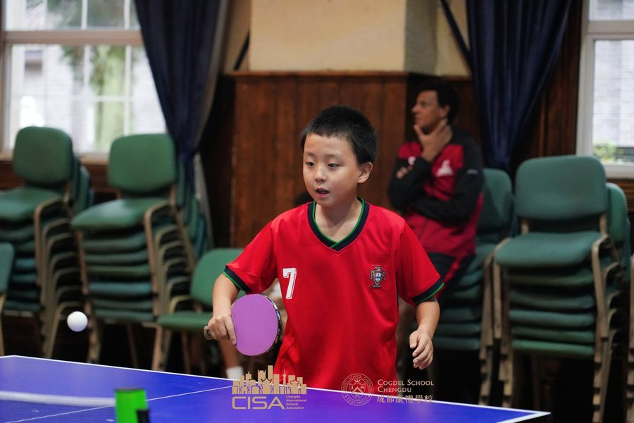
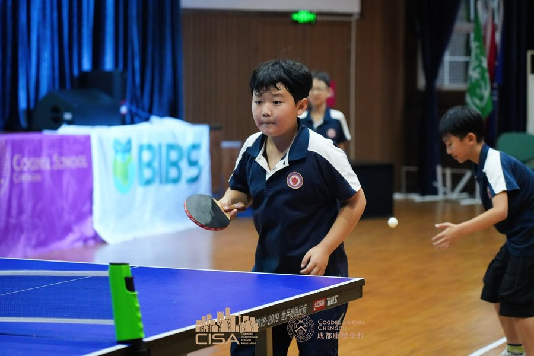

身心健康L3 自化2026-09-10
在CISA乒乓球比赛中，我看到孩子们的精彩表现，小小的乒乓球，藏着大大的热爱。他专注、勇敢，不畏惧对手，不因得失慌乱。无论输赢，这份投入和坚持都格外耀眼，一次次精彩的回球，尽显不服输的劲头。
At the CISA table tennis competition, I saw the wonderful performances of the children. In the tiny table tennis ball lies a great passion. They are focused and brave, fearing no opponent and staying calm regardless of wins or losses. Whether they win or lose, this dedication and persistence shine especially bright. With every brilliant return, they show a spirit that refuses to give up.